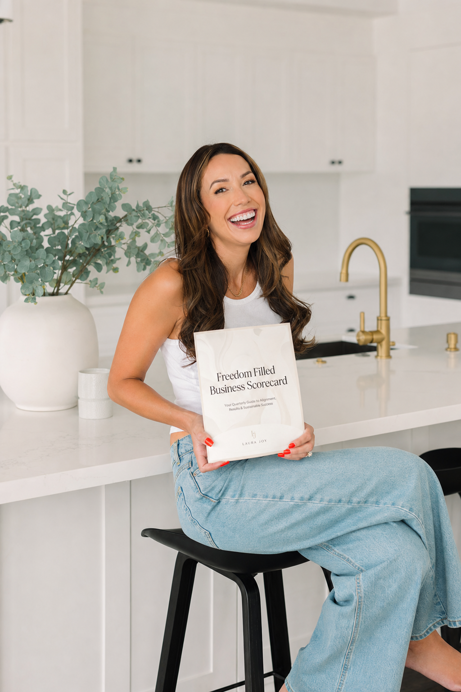

Your Scorecard result
Hey lovely,
Loading your result.
Where to focus first
Read more about this
Three quick wins
Start here.
The first three moves to make this week, one at a time. Tap each one as you go.

A note from Tracy
Hey, I see you.
Whatever your Scorecard surfaced today, I want you to know that this is good news. You now have language for what is asking for your attention. That is the start of every freedom-filled chapter I have ever lived. Take what serves you, leave what does not. Your business is allowed to be yours.
Xx Tracy.
Yours to take
Your tools, delivered.
Take what serves you, leave what does not. Your business is allowed to be yours.
Tracy.